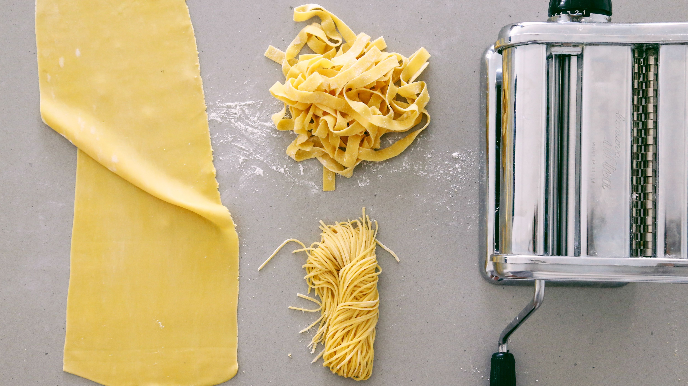

Fresh Pasta

Description
This is one of my favourite recipes that I make at least once a week
You can make this with the basic ingredients you almost always have in your home
Ingredients
- 2 Free-range eggs
- 100g Semolina wheat
- 100g Cake wheat flower
- 2 Tbs Olive Oil
- Pinch of salt
Steps
- Add the semoilna, cake wheat flower, and salt into a large mixing bowl
- Make a bowl/crater in the middle of the mixture
- Add the eggs in the middle of the bowl/crater and mix in slowly using a fork
- When you've incorporated most of the eggs into the mixture, add the olive oil and mix it into the mixture with your hands
- Turn out mixture onto a slightly flowered surface and knead for 5-7 minutes